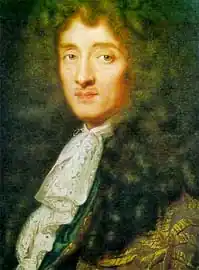

РАСІН, Жан (Racine, Jean — 21.12.1639, Ферте-Мілон, графство Валуа, тепер деп. Ен — 21.04.1699, Париж) — французький драматург-класицист, член Французької Академії (1672).
Народився у буржуазній сім'ї провінційного чиновника. Осиротівши у трирічному віці, навчався у школі при монастирі Пор-Рояль, де усамітнилася від світу його бабуся. Здобув суворе релігійне виховання і класичну освіту.
Расін вперше привернув увагу до своєї творчості одою "Німфа Сени" ("La Nymphe de la Seine"), яку він написав у 1660 p. з нагоди весілля Людовіка XIV. Приблизно тоді ж Расін познайомився з Мольєром, котрий поставив його перші трагедії "Фіваїда, або Брати-вороги" ("haThiba'ide, ou les Freres-ennemis", 1664), "Олександр Великий" ("Alexandre le Grand", 1665). Другий етап творчості Расіна охоплює 1667— 1677 pp. Він розпочинається трагедією "Андромаха" ("Andromaque", пост. 1667, опубл. 1668), яка стала поворотним пунктом в історії французької класицистської трагедії. У цьому творі вперше набули втілення художні ідеї Расіна. Драматург використав сюжет із давньогрецького міфу про Троянську війну, але опрацював його так, щоби відтворити конфлікт почуття й обов'язку та ідею "трагічної вини" героїв. Персонажі трагедії пов'язані між собою стосунками, характерними для структури пасторальних романів XVII ст.: кохання кожного героя залишається нерозділеним. Але якщо в пасторальних романах діяли пастухи і пастушки, то у трагедії діють державці, відповідальні за долю своїх народів і держав. Саме це і уможливлює розкриття головного класицистського конфлікту. Після захоплення Трої вдова Гектора, Андромаха, разом із сином Астіанаксом стала бранкою Ахіллового сина Пірра, царя Епіру. Цар закохався у свою рабиню, котра, проте, залишається вірною пам'яті вождя троянців Гектора. У Пірра є наречена — Герміона, донька царя Менелая і Єлени Прекрасної. Герміона палко кохає Пірра. її батько виряджає в Епір послів для виконання неприємного доручення: Менелай хоче позбутися Астіанакса, побоюючись, що в майбутньому він зможе згуртувати троянців та помститися грекам за смерть свого батька Гектора і зруйнування Трої. Посланців Менелая очолює Орест. Але він прагне потрапити в Епір не заради виконання необхідного з державних міркувань, хоча й негуманного завдання. Орест мріє побачити Герміону, яку він безнадійно кохає. Якщо до цього додати, що Герміона у своєму розпачливому коханні, врешті, зненавидить Пірра і жадатиме його смерті, то стає зрозуміло, що всіх героїв, окрім Андромахи, Расін трактує з погляду їхньої "трагічної вини": всі вони заради почуття нехтують обов'язком. Пірр повинен одружитися з Герміоною, тому що цей шлюб зміцнює грецькі держави, пов'язує їх особливо міцними відносинами. Герміона повинна дбати про життя і безпеку володаря Епіру, тому що його смерть послабить могутність грецьких держав, а отже, і її батьківщини Спарти. Орест повинен прагнути зміцнення безпеки своєї країни, йому слід зрозуміти, що Герміона повинна стати дружиною Пірра, але він не може вгамувати своєї пристрасті. Відтак утворюється ланцюжок: Орест кохає Герміону, Герміона кохає Пірра, Пірр кохає Андромаху, Андромаха кохає покійного Гектора. А "трагічна вина", за законами трагедій Расіна, є причиною загибелі героя. Розглянемо, як цей принцип сюжетотворення діє в "Андромасі". Пірр повідомляє Андромасі про небезпеку, яка загрожує її синові. Він пропонує їй стати його дружиною, щоб урятувати сина: адже тоді Астіанакс стане пасербом царя і його спадкоємцем. Андромаха повинна зробити вибір. Але якщо герої трагедій П. Корнеля були вільними у своєму виборі, то у ситуації вибору між тим, чи бути Андромасі дружиною убивці її сім'ї, а чи занапастити сина Астіанакса, "не існує розумного і морального рішення", як слушно зауважують зарубіжні та вітчизняні дослідники. Андромаха може обрати лише компроміс, вдаючись до хитрощів: каже Піррові про свою згоду стати його дружиною, але вирішує накласти на себе руки одразу ж після укладення їхнього шлюбу у храмі. Таким чином, вона не зганьбить пам'яті Гектора, але змусить Пірра боронити Астіанакса як власного сина. Проте ситуація різко змінюється, коли у розвиток подій втручається Герміона. Ображена рішенням Пірра одружитися з рабинею, відкинувши кохання царівни, вона обіцяє покохати Ореста, якщо той уб'є Пірра. Орест організовує напад на Пірра в ту мить, коли Андромаху оголошують його дружиною. Пірр гине. Орест поспішає розповісти Герміоні про те, що її наказ виконано. Але Герміона називає його вбивцею. Расін чудово передає суперечність її почуттів: за ненавистю до Пірра криється кохання, і саме тому здається, що у словах царівни немає логіки. Герміона вчиняє самогубство. Орест божеволіє: перед його очима оживає Пірр, якого цілує Герміона. Трагедія завершується. Кожен герой, наділений Расіном "трагічною виною", гине (божевілля Ореста належить розглядати як його духовну смерть). Залишається жити лише Андромаха, котра не зрадила свого обов'язку. Проте, ставши царицею Епіру, вона знову опиняється у ситуації несвободи. Те, що почалося з компромісу, компромісом і закінчується: Андромаха повинна тепер піклуватися про народ, який брав участь у руйнуванні її рідної Трої та знищенні її співвітчизників. На відміну від трагедій Корнеля, в "Андромасі" немає щасливої розв'язки. Упродовж десятиліття найвищого творчого злету Расін написав чимало видатних творів. У трагедії "Британік" ("Britannicus", пост. 1669, опубл. 1670) драматург відтворив початок правління римського імператора Нерона, котрий учиняє перший злочин — отруює Британіка, свого суперника у коханні. Трагедія спрямована проти тиранії. Інша трагедія цього періоду — "Іфіґенія" ("Iphigenie", пост. 1674, опубл. 1675) — змальовує епізод, що передував Троянській війні. Ватажок греків Агамемнон повинен принести в жертву богам свою доньку Іфіґенію. Проте складність його почуттів не обмежується суперечністю між батьківською любов'ю до Іфіґенії та обов'язком перед греками. Навіть сам цей обов'язок видається вельми сумнівним, адже війна проти Трої має загарбницький характер. Расін змінює давньогрецький міф. У трагедії діє не одна, а дві Іфіґенії, і гине та з них, котра не зуміла впоратися зі своїми пристрастями і знехтувати почуттями заради обов'язку. Другий період творчості Расіна завершується трагедією "Федра" ("Phedre", 1677). Драматург ставився до цього твору з особливим пієтетом, адже, на його думку, саме у цій трагедії йому вдалося найадекватніше передати універсальні завдання театру. У передмові до "Федри" Расін писав: "Можу лише стверджувати, що у жодній іншій з моїх трагедій доброчесність не була зображена так виразно, як у цій. Тут найдрібніші помилки якнайсуворіше караються; навіть злочинна думка жахає так само, як і скоєний злочин; ...пристрасті відтворюються єдино для того, щоби показати, яке сум'яття вони породжують, а безчесність змальовується фарбами, що дозволяють одразу ж розпізнати і зненавидіти її потворність. Властиво, це і є тією метою, до якої повинен прагнути кожен, хто творить для театру..." Расін знову використовує мотив "трагічної вини" як основу для розвитку і змалювання характерів. З цією метою він змінює міф. У традиційному викладі ця трагічна історія зводилася до таких колізій: дружина афінського царя Тесея Федра покохала свого пасерба Іпполіта. серце котрого було твердим, наче камінь. Освідчившись у своїх почуттях Іпполітові і побоюючись, що він про все розкаже Тесеєві і назавжди знеславить не тільки її, а й її дітей, Федра обмовила Іпполіта. Вона сказала Тесеєві, що Іпполіт домагався її кохання, а потім наклала на себе руки. Тесей благає бога Посейдона покарати ненависного сина. Іпполіт гине, і саме у цю мить з'ясовується істина. Окремі деталі у цьому міфі не влаштовували Расіна. Якщо Іпполіт ні в чому не винен, то він не повинен загинути. Якщо Федра — наклепниця. то вона не може викликати співчуття у глядачів. Драматург змінює міф: у його трагедії Іпполіт приховує своє кохання до Арикії, доньки ворога його батька Тесея. Таким чином, його кохання суперечить обов'язку, з'являється мотив "трагічної вини", і смерть Іпполіта, за законами трагедій Расіна, стає необхідним компонентом розвитку сюжету твору. Обмовляє Іпполіта не Федра, а її мамка Енона. Федра, дізнавшись про це, проганяє геть свою вірну служницю. Енона кидається зі скелі у море, а Федра випиває отруту і перед смертю зізнається у всьому. На відміну від персонажів Корнеля, герої "Федри" не мають свободи вибору між обов'язком і почуттям. Розум не владний над їхніми пристрастями. Щоби це підкреслити, Расін навіть нехтує принципом правдивості і пояснює нездоланну силу любовних пристрастей втручанням Бога. Вражає майстерність Расіна-психолога. Він показує, що вчинки людини не завжди збігаються з її почуттями та намірами, а іноді можуть бути навіть зовсім протилежними. Федра, кохаючи Іпполіта, переслідує його, і він тривалий час вважає, що Федра — його ворог. Ворогом вважає Іпполіта Арикія, його освідчення у коханні виявляється для неї цілковитою несподіванкою. Щоби зберегти честь своїх дітей, Федра не стає на заваді безчесній брехні Енони. Натомість служниця бреше тому, що безмежно віддана своїй пані. Дослідження прихованого від поверхового погляду внутрішнього життя людини, впровадження принципу психологізму у французьку літературу — величезний внесок Р. у мистецтво. На жаль, у драматурга не бракувало могутніх ворогів — прем'єра "Федри" була невдалою. Расін надовго покинув драматургію. Він захопився релігійними ідеями, зневажливо висловлювався про свою творчість.Протягом останніх років життя Расін знову повернувся до драматургії. Він створив дві трагедії на біблійні сюжети — "Естер" ("Esther", 1689) та "Гофолія" ("Athalie", пост. 1690, опубл. 1691). В обидвох трагедіях автор засуджує злочини можновладців, викриває деспотизм. "Гофолія" відіграла важливу роль у формуванні просвітницької трагедії XVIII ст. Цю трагедію високо цінував Вольтер. Расін увійшов у літературу тоді, коли для жанру трагедії настали нелегкі часи. У середині XVII ст. і особливо у першій половині 60-х pp. трагедія переживала період тимчасової кризи. Саме тоді із надзвичайною силою розкрився геній Мольєра.